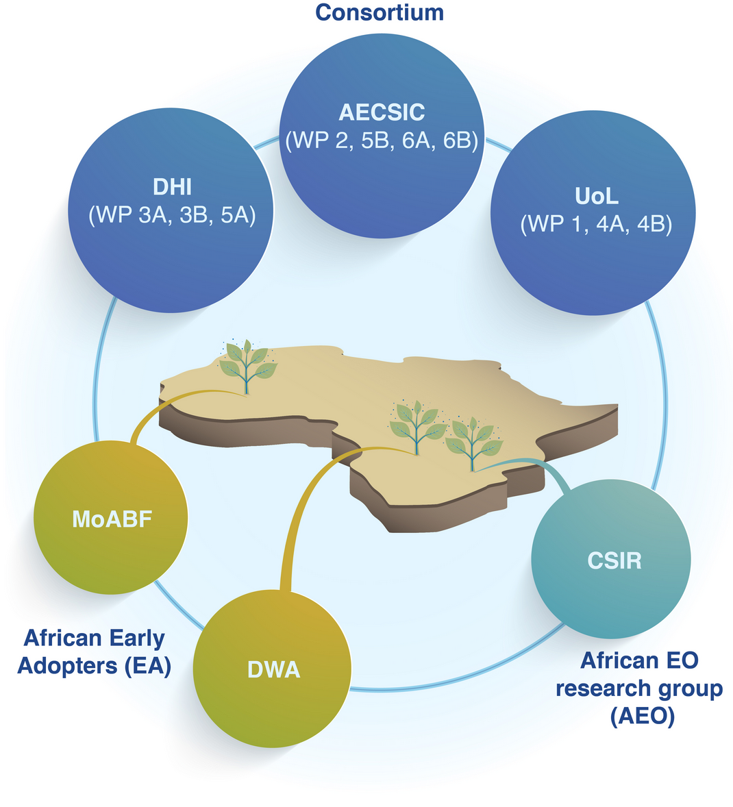

The Team#

European Partners#
CSIC is the largest public institution dedicated to research in Spain and the third largest in Europe. For that reason AECSIC has participated in relevant international projects and networks related to this activities, such as the SENSECO ‘Optical synergies for spatiotemporal SENsing of Scalable ECOphysiological traits COST action, the Marie Skłodowska-Curie Innovative Training Network on Remote Sensing for Ecosystem ModElling (TruStEE), or the DATI H2020 PRIMA project on Digital Agriculture Technologies for Irrigation efficiency.
DHI is an independent, international consulting and research-based not-for-profit organization of more than 1100 employees, with offices in 30+ countries, project experience from more than 140 countries, and with more than 50 years of experience in water resources management and environmental sustainability. In the first part of 2021 DHI was reorganized to strengthen innovation and collaboration, to meet a new strategic focus on sustainability development and to deliver data driven advisory support in an international market. Former DHI GRAS was incorporated into the new Data & Analytics (DnA) section in which we are leveraging our strong background in remote sensing for environmental assessment and mapping and profound expertise in operational EO system and service including easy and convenient dissemination through our customized web portal development capabilities. Of particular relevance for this proposal is the lead role of DHI GRAS in Sen-ET and ET4FAO projects. DHI GRAS was also leading Earth Observation for Sustainable Development activities which involved extensive consultations with International Finance Institutions and their client state partners in defining EO user needs and requirements in Africa, Asia and Latin America, and the subsequent demonstration on how agricultural EO applications based on time series of Sentinel data, can assist large International Financial Institutions (WB, IADB, ADB, IFAD, GEF etc.) and their agricultural and water resources project portfolio.
The University of Leicester is one of the UK’s leading research and teaching universities. The Earth Observation Science group is an interdisciplinary team working across the Departments of Physics/Astronomy, Chemistry and Geography. The group hosts the Directorate and Leicester science unit of the National Centre for Earth Observation led by Prof. John Remedios. The surface temperature activities of EOS at Leicester are integrated into the NCEO Leicester science unit, benefitting from strategic support at national level. Studies of the ATSR and Sentinel-3 missions are key projects in the Leicester surface temperature team. The Leicester PI team (PI, Prof. Remedios) for ATSR has been leading the ATSR programme since 1993. The PI team have been particularly concerned to support algorithm developments, assess data quality and analyze long-term time series of sea surface temperature, and land surface temperature. ESA awarded the GlobTemperature and Climate Change Initiative Land Surface Temperature projects to a team led by Leicester (PI, Dr. Ghent). The group has been supported by ESA to develop the LST algorithms for AATSR and SLSTR on Sentinel-3, and has produced the latest LST ATBDs for these instruments. In addition, the group is responsible for the latest developments in LST cloud masking for SLSTR, with their algorithm currently being implemented into the operational chain. Through Dr Ghent the team are involved in the S3MPC and provide the SLSTR LST algorithm as well as research on cloud clearing over land. The team are also part of the GBOV (Ground-Based Observations for Validation of Copernicus Land Products). The surface temperature group has become fundamentally involved in the early specification and developments towards a potential new Copernicus mission: Land Surface Temperature Mission (LSTM) with ESA. Dr. Ghent is also a member of the MAG from LSTM. The University of Leicester has been leading the application of ESA and Copernicus EO data on agricultural water management in a series of global challenges UK-India research programmes. As a result the Leicester team has conducted a series of successful stakeholder engagement workshops and panel discussions.
African Early Adopters#
The Ministry of Agriculture and Irrigation Development of Burkina Faso (MoABF), Ministère de l’Agriculture et des Amenagement Hidrauliques, is responsible for the implementation of the policies defined by the Government of Burkina Faso regarding agricultural matters. To that purpose, MoABF has the responsibility of, among others, analyzing, forecasting, orienting and monitoring the performance of the State agricultural services, taking into account the capacities of the non-state sector (farmers’ organization, other private operations and NGOs). In addition MoABF is in charge of supporting and advising food producers for raising their technical and management level as well as improving the productivity of their farms. MoABF will provide in situ data on yield (rice, maize and/or sorghum) and irrigation, organize webinars, and give feedback on their technical and operational needs.
The Department of Water and Sanitation of Botswana (DWA) is one of the departments belonging to the Ministry of Land Management, Water and Sanitation Services. DWA has the national responsibility for policy, planning, assessment, of Botswana’s scarce water resources, including the allocation of water to the different sectors of the economy. DWA is the sole responsible for surface water assessment, while it shares the responsibility of groundwater assessment with the other departments of the Ministry. DWA also acts as the Secretariat to the water apportionment board (WAB). The WAB is a statutory body established under the water act of 1956 to issue water abstraction and wastewater discharge rights to water consumers and/or users. To that end the mission of DWA is to plan, assess, develop and protect Botswana’s water resources for sustainabl contribution to socio-economic growth. DWA will provide in situ data on irrigation and water use, engage relevant actors in webinars, give feedback on their technical and operational needs as well on the qualitative and quantitative analysis of the developed solution. Botswana will set up a technical reference group, formed with experts from Water, Agriculture and Environment sectors, involved in water management, to evaluate the developed prototype and using it in a local context, and by participating in online meetings.
The Advanced Agriculture and Food Cluster of CSIR has a long research and capacity building record on remote sensing and precision agriculture, and therefore will participate as African EO research partner. CSIR closely collaborates with the University of Preatoria -member of the Pan African University Space Science Institute- and actively participates in the GMES & Africa initiative. CSIR will participate in the development of the algorithm and in the evaluation of the prototype in a regional and educational context. In addition CSIR will help the consortium in searching and gathering of crop yield and irrigation data, and will participate in webinars, encouraging as well researchers, technicians and stakeholders to join the webinars.